Sleep Well Stories is an iOS app that generates personalised bedtime stories for kids aged 3–12 in under a minute. Parents describe what the story should be about, answer a few guided questions, and the app writes and narrates it aloud.
1 min44 pages
Luna and the Midnight Cats
Every night, when the world is fast asleep, Luna tiptoes out into the quiet moonlight. That's when the cats come. Big cats, small cats, striped and spotted — they gather from rooftops…
01 · Context
Six people, one month, one shipping iOS app.
One-month sprint to design and ship the first version of Sleep Well Stories — an AI-powered bedtime story app for iOS. Shipped to the German App Store on December 8, 2025. Currently live in German and English at €2.99/month.
★ The team
Founder / client — product vision
Product owner — scope and priorities
Developer — iOS engineering
QA — testing and release
Marketer — positioning and launch
Me — sole designer
★ What I owned
Research — interviews + competitive audit
Wireframes — user flows and IA
Visual design — colors, type, components
Illustrations — 9 characters + 8 places
Interaction — micro-copy and edge cases
Handoff — dev specs and QA support
Why this matters. Sole designer at a six-person indie studio means fast decisions, close collaboration, and no committee. It also means you own the full pipeline — from talking to parents to shipping pixels. This case study is about the decisions that came out of that pipeline.
02 · Research → decisions
Six findings that changed the product.
Before any wireframes, I spent the first two weeks talking to parents and pulling apart the competition. Six findings shaped the product in ways the team hadn't planned for.
8 parent interviews — mix of first-time parents and parents with 2+ kids, all with bedtime routines that included stories. Kids aged 3 to 12.
Competitive audit — 5 AI story apps in the App Store, plus a handful of non-AI bedtime apps for contrast.
Synthesis — I turned interview notes and competitor patterns into a decision brief before starting wireframes.
★ Decision 1 · the star
Nothing between the user and the first story.
What the client wanted
Standard v1 flow: Splash → Registration → 3 onboarding screens → Home. Two sources of friction before the user ever touched a story.
What the research showed
Every parent I interviewed said some version of the same thing: they wouldn't commit an email or an Apple ID before feeling whether the app worked. The explanatory onboarding was worse — parents said they'd skip it or bounce entirely. The best pitch for an AI story app isn't a tour. It's a story.
The decision — remove both sources of friction
1. Killed the explanatory onboarding. Tapping "I'm new here" on the splash now takes the user directly into the story creation wizard. No tour, no explainers.
2. Delayed registration. The first story is free — no email, no signup, no Apple ID. Only after the first story completes does the app offer to register ("save your stories, add more kids, unlock audiobook mode"). By then the parent has felt the product work.
What got cut as proof
The team already had mockups for a 3-screen onboarding flow — "Create personal stories", "One-click story generation", "Audiobook mode." All three were production-ready. I made the case for removing them and shipping straight to the wizard.
CUT · Onboarding 1/3CUT · Onboarding 2/3
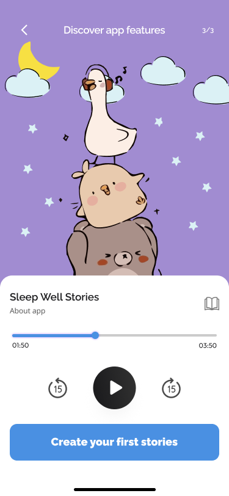
CUT · Onboarding 3/3
Alternatives I rejected
Keep onboarding but make it skippable — research showed parents don't skip, they bounce
Social login (Apple/Google) as a "lighter" signup — still friction, still pre-value
Freemium paywall — same psychological problem, just further down the funnel
Why this one matters most
Two cuts, one principle: parents judge products in seconds. Every screen between them and the first story costs a user. Research was clear, the math was clear, and the client agreed to ship with zero friction before value delivery — a level of conviction that's rare in v1 products.
★ Decision 2 · co-star
Structured wizard, not a prompt box.
What the client wanted
A single screen with a free-text input: "Describe the story you want" → press button → AI generates. Fast to build. Minimal onboarding. Maximum AI magic.
What the research showed
Parents couldn't articulate what they wanted. Parents defaulted to vague prompts — "a fun animal story", "something calming" — and the AI returned equally generic output. After a few tries, the app stopped feeling magical.
Kids wanted ownership, not just content. Parents said the same thing: their kids wanted to see themselves in the story. An abstract text description didn't give a kid a sense of being the hero. Personalization had to be visual and concrete, not typed.
The decision
Replace the single prompt screen with a 3-step guided wizard:
Step 1 — Hero. Pick a character and name it (kids literally type their own name in)
Step 2 — Setting. Where does the story happen? Arctic, castle, farm, space, or custom
Structure delivers two things at once: richer input for the AI (better prompts → better stories) and a sense of ownership for the kid (the hero has their name and looks how they want).
Step 3/3 — the parent's controls
Alternatives I rejected
The client's free-text prompt — research showed it failed for both parents and AI output quality
A 5+ step wizard — would have violated the 3-step dropout finding (Decision 6)
Separate flows for "quick story" vs "detailed story" — would split attention and double the maintenance surface
Decision 3 · supporting
Multi-child profiles.
Finding — roughly half the families I interviewed had 2+ kids. Parents rotate kids across nights, or read to both at once. A single-child account assumed a family structure that didn't match reality.
Decision — the account holder can add multiple child profiles. Stories are tagged to the active child. Parent switches child from a profile menu — no need to log out.
Decision 4 · supporting
Audiobook mode.
Finding — many kids in my interviews were too young to read — or old enough but still wanted to be read to at bedtime. Parents also mentioned story apps during car rides, quiet time, and anywhere they didn't want a screen.
Decision — every story has an audiobook toggle at creation time. Audio stories are marked with a headphone icon in the feed.
Decision 5 · supporting
Recurring heroes in the feed.
Finding — kids ask for the same characters repeatedly. Every parent mentioned their kid latching onto one hero and asking for more stories with that character — familiarity over novelty.
Decision — the home feed has a "Meet the heroes" row — a horizontally scrolling list of the kid's previously-created heroes. One tap starts a new story with an existing hero, skipping the character creation step.
Decision 6 · supporting
The 3-step rule, applied twice.
Finding — parents described giving up on apps that asked too many questions at setup. Dropout spiked after the 3rd step. More than 3 steps felt like homework.
Decision — applied the rule in two places: initial kid setup capped at 1 screen (name, age, gender), and story creation wizard capped at 3 steps (hero / setting / style-theme). Everything else was inferred from defaults or asked later, inside the product.
03 · Walkthrough
The flow — research made visible.
A walkthrough of the shipped product. Not every screen — just the moments where a research finding or a design decision is visible.
The creation flow
Splash → straight to creation. No onboarding, no signup, no tour (Decision 1). "I'm new here" → immediate entry into the wizard.
Splash — "I'm new here" goes straight to creationStep 1/3 — Hero (kids name their own)Step 3/3 — parent's controls
Story generating — wait vs. background
Custom snail animation plays during story generation. For a short story (~1 minute), the parent waits and watches the snail. For a long story (up to 10 minutes), that's too long — so the user can navigate away to the home feed, browse other stories, or even start creating a second one while the first generates in the background. Different wait behaviors for different content lengths.
Custom snail loading animation
The library flow
The second surface of the app — browsing existing stories. "Meet the heroes" (Decision 5), category chips, search with filter, and custom empty states.
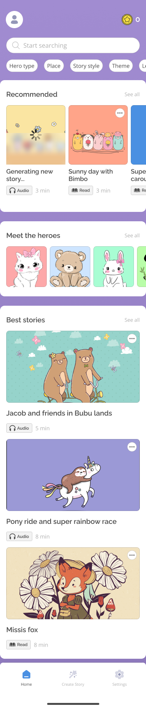
Home feed — "Meet the heroes" and category chipsFilter modal — 5 dimensions, pill-group for lengthFilter applied — badge shows active filters
Tablet adaptation
Research showed something unexpected: our target families (kids 3–12) were predominantly iPad households. A shared iPad at bedtime was more common than a parent's phone. So the tablet layout wasn't a scaling exercise — it was a first-class surface. Same app, same features, redesigned for the larger canvas.
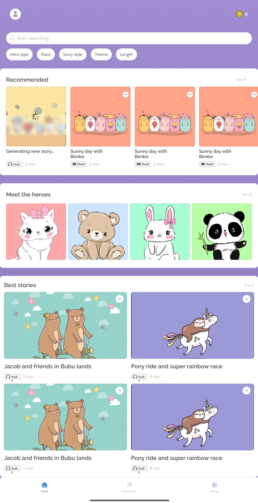
Tablet · Step 1Tablet · Step 2Tablet · Step 3
04 · Visual direction
The look — warm bedtime.
Moodboard
Before picking a single color, I pulled together a moodboard: bedtime apps, kids' learning apps, playful illustrations, and the specific tonal range I was aiming for. The goal was "warm bedtime" — not clinical, not candy-bright, not sleep-zombie purple. Something that felt like a trusted object on the nightstand.
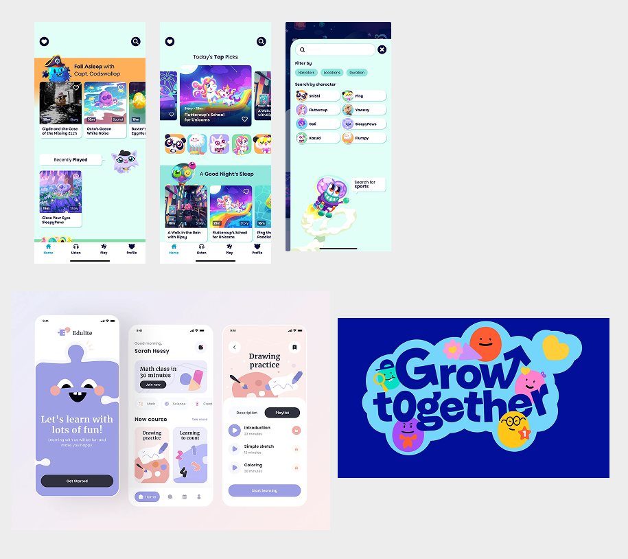
Color, type & design system
Three primary colors carry the brand: Purple #A18CD1 (the hero color of the splash and brand moments), Bright blue #4A90E2 (CTAs and active states), and Yellow #F7E043 (highlights and positive moments). Plus a full neutral ramp and a purple gradient for depth.
Typography is two faces, strict roles: Raleway for headings, buttons, and captions (the confident, slightly rounded voice of the brand), and Open Sans for body copy (maximum readability for parents reading at 9pm).
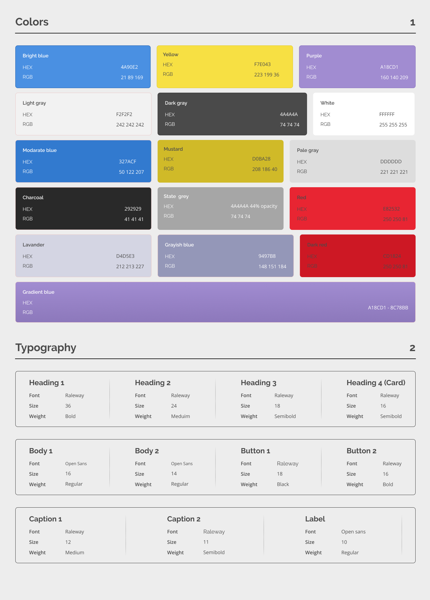
I built out a full component library before shipping — not documentation theatre, but because a 6-person team ships faster when the designer stops hand-deciding button states at 11pm. Seven core components, production-ready: buttons, inputs, cards, dropdowns, icons, navigation bar, and table rows.
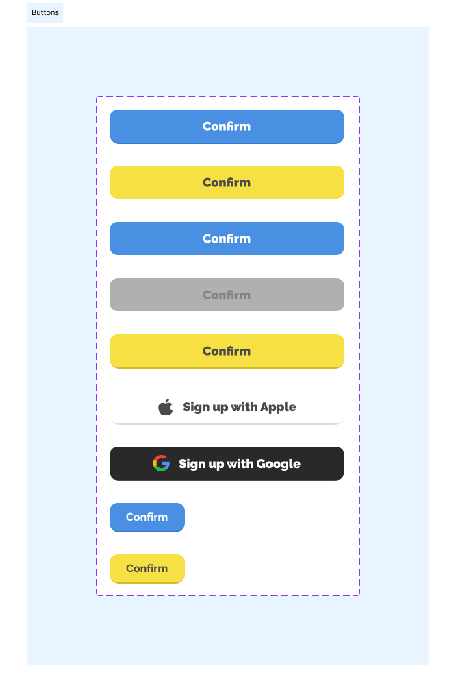
Buttons
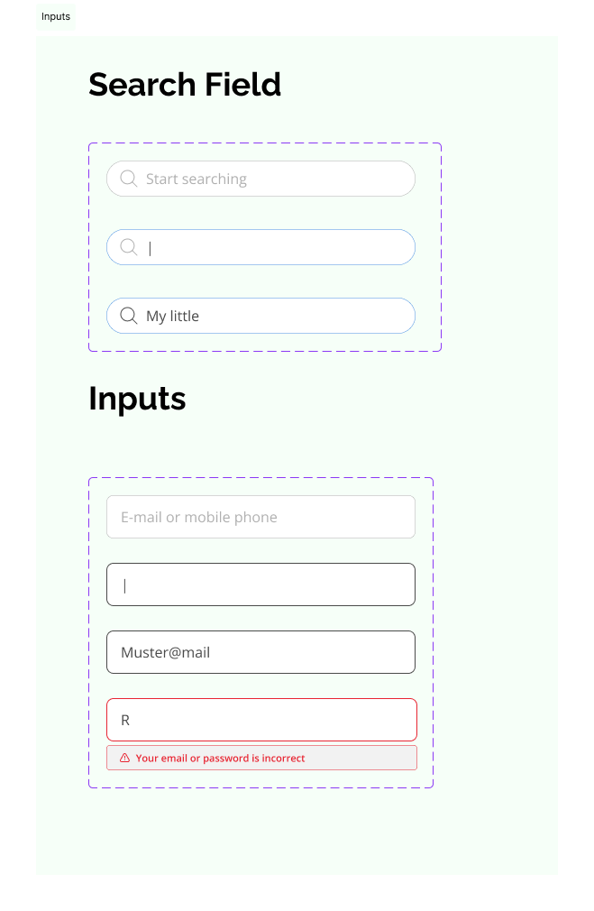
Inputs
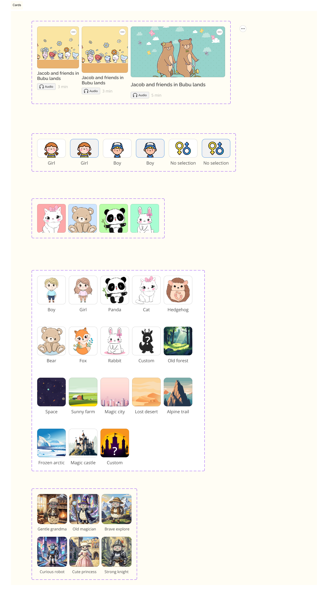
CardsDropdowns
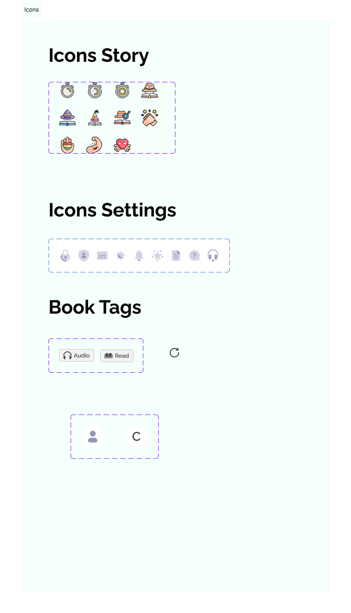
IconsNavigation bar
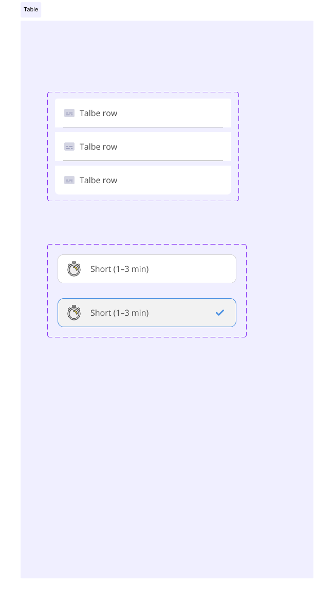
Table rows
Dark mode
Dark mode wasn't a toggle for power users — it was the bedtime use case. Two reasons: first, when a parent's phone switches to dark mode at sunset, the app should follow. Fighting the system feels wrong on iOS in 2025. Second, parents reading stories in a half-lit bedroom don't want a blinding cream screen. Dark mode isn't aesthetic here — it's a usability feature for the exact moment the app is used.
Dark mode · feedDark mode · story detail
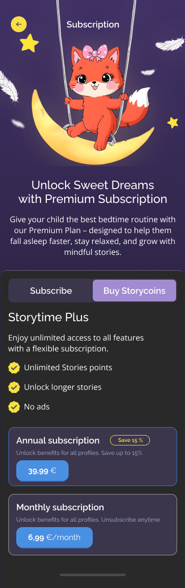
Dark mode · subscription
05 · Design details
Four small craft moments.
The parts that don't fit anywhere else but matter.
The ghost empty state
Every app has an empty search result. Most use a stock magnifying glass. We drew a ghost. Small detail — kids notice it, parents smile, the frustration of "no results" gets softened by a beat of character. Empty states are where brand voice matters most, because it's where the user is the most disappointed.
Custom ghost — not a stock icon
Custom everything
9 hand-drawn character sprites. 8 hand-drawn place illustrations. Custom snail loading animation. Custom ghost empty state. Easier path: Noun Project subscription + Lottie packs + ship in half the time. We drew it ourselves because "kids want to see themselves" doesn't work with generic icons. The illustrations are what makes the product feel human — which matters disproportionately in a category where people are suspicious of AI.
BoyGirlBearPandaFoxKittyRabbitHedgehogCustom
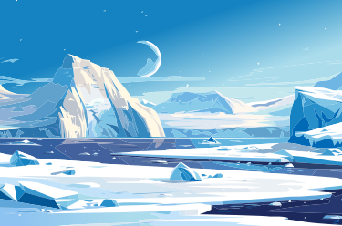
Arctic
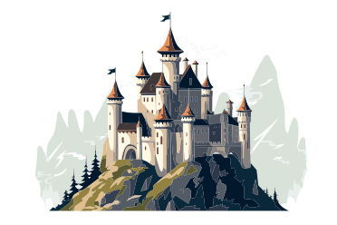
Castle
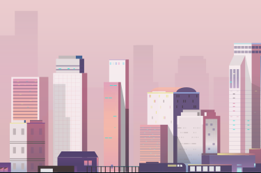
City
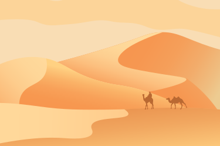
Desert
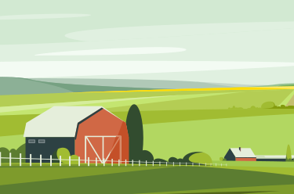
Farm
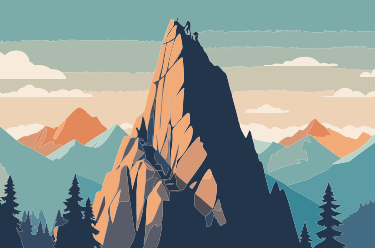
Mountains
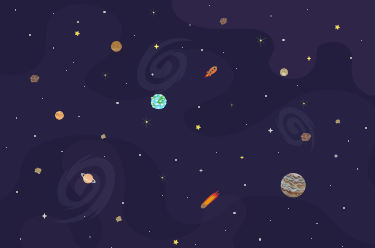
SpaceCustom
Kids type their own names
The "name your hero" input looks trivial. It's the moment the research pays off. Parents said their kids wanted to see themselves in the story — the smallest possible UI for that is a text field. A 4-year-old types "Emma." The AI makes Emma the hero. Emma hears her name in a story about herself. The finding becomes the product.
06 · Cuts & trade-offs
What didn't ship.
Every shipped product is a monument to what didn't make it. Three things that got cut or traded off.
Cut — the explanatory onboarding
The team had mockups for a 3-screen feature tour: "Create personal stories", "One-click story generation", "Audiobook mode." All three were production-ready. I made the case for killing them (see Decision 1). Zero users miss them.
Cut — "one-click lazy mode"
A separate quick-tap button that would've generated a random story with no personalization. The client wanted it as a fallback. I pushed back: it undermines the whole personalization pitch and trains users to expect generic output. We shipped without it. If retention data shows parents avoid the 3-step wizard, it's the first thing I'd reconsider.
Trade-off — English-first copy at launch
The app targets DACH but UI copy was written in English first, then localized. I pushed for simultaneous drafting in both languages to avoid English-shaped sentences in the German version. We didn't have the budget. The German version shipped with a few awkward translations that got fixed in v0.1.1. Next time: fight harder.
07 · Shipped
Live in the App Store.
Sleep Well Stories — live since December 8, 2025.
Available in German and English at €2.99/month. Runs on iPhone, iPad, Mac (M1+), and Apple Vision.
RELEASED · Dec 8, 2025VERSION · 0.1.1PRICE · €2.99 / monthPLATFORMS · iOS, iPadOS, macOS, visionOS
Every one of the six research-driven decisions survived into production:
No explanatory onboarding — straight to creation
Delayed registration — first story before signup
Structured 3-step wizard — not the prompt box
Multi-child profiles
Audiobook mode
Recurring "Meet the heroes" in the feed
For me, the best signal that the research was the right call is that none of these decisions got cut under engineering pressure. The easy path kept showing up in team discussions — "should we add an onboarding just in case?", "what if we put signup on step 2?" — and every time the research answer held.
What I'd do differently
1. Test with actual kids earlier, not just parents.
I validated the 3-step wizard with parents. I did not run formal usability sessions with kids aged 3–6. If I had, I'd have caught that the text-only "Hedgehog" label needed an icon — something we added only after informal feedback. A single round of kid testing would've saved a revision cycle.
2. Design for the AI's failure modes.
Every screen assumed the AI produced a good story. But AI is stochastic — sometimes it's bland, off-tone, or just weird. There's no regenerate button, no "report this story", no rating mechanism in v1. If a kid gets a bad story, the parent has no recourse. v2 needs failure-mode UI: regenerate, report, rate, save-as-favorite.
3. Champion German-first copy harder.
Mentioned in the cuts section. Next time I refuse to sign off on UI copy written only in one language for a bilingual product. Translation-shaped sentences hurt trust in a way that's hard to measure.